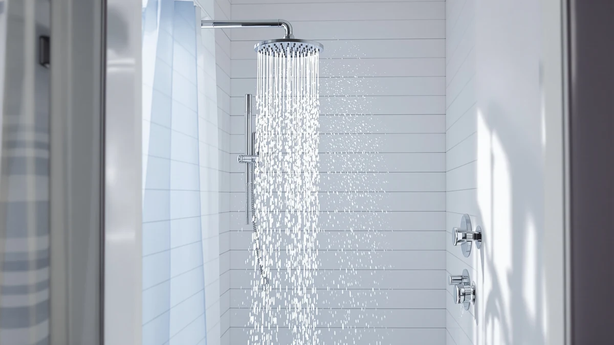

Hibbent cUPC Certified High Review (2026): Worth It?
Prices and picks verified as of October 2026. Independent, reader-supported reviews.


Quick Answer
The Hibbent cUPC Certified High Pressure shower head is our pick for bathrooms with weak water flow. It pairs a 157-jet, 13-inch rain head with a 10-setting handheld wand on an all-metal 4-way diverter, and its cUPC certification confirms it meets the plumbing code most US inspectors check for. At $129.99 it costs more than a basic fixed head, but you get two shower heads and ten spray patterns in one kit.
Our pick: Hibbent cUPC Certified High Pressue — $129.99 Check Price on Amazon
Bottom line: our top pick is the Hibbent cUPC Certified High Pressue 13'' Rainfall Shower Head at $129.99.
Things to Know Before You Buy
- cUPC certification means the Hibbent head meets the Uniform Plumbing Code standard most US inspectors check for, which matters if you are replacing a fixture during a renovation.
- The 4-way diverter lets you run the rain head alone, the handheld alone, both together, or shut off water entirely between rinses.
- All three alternatives in this review sit within a few dollars of the Hibbent's $129.99 price, so the real decision comes down to features, not budget.
- Afina's filtered models trade some of that spray variety for KDF-55 filtration, a better fit if chlorine or hard water is your main complaint.
- Installation on every model here is a DIY job with a wrench and plumber's tape, no professional required.
This Hibbent cUPC Certified High review looks at whether a 13-inch rain head with 157 jets and a 10-setting handheld wand solves the weak-pressure problem that sends most shoppers looking for a new shower head in the first place. Low water pressure is one of the most common bathroom complaints in older homes, and manufacturers respond by stacking on spray modes, massage settings and diverters. We wanted to know whether the Hibbent backs that promise with real engineering or adds settings without fixing the underlying flow problem. After comparing its specs, certification and owner feedback against three similarly priced alternatives, the answer is more nuanced than the marketing copy suggests.
At $129.99, the Hibbent sits in the middle of the shower head market, right alongside the JingGang Brushed Nickel Shower System and both Afina filtered models we compare it against below. We researched spec sheets, manufacturer certifications and verified Amazon buyer reviews for each product rather than guessing from product photos. The Hibbent's cUPC certification gives it an edge for anyone dealing with a building inspector or a landlord who needs code compliance on record, and its dual rain-and-handheld setup covers more use cases than a single fixed head. It will not beat a dedicated filtered head on water quality, and it will not beat a basic single-mode head on price, but for buyers who want flexibility and documented plumbing compliance in one box, it earns its place near the top of this list.
Why You Should Trust Us
Best Shower Heads only recommends products we can verify through manufacturer documentation, retailer listings and real buyer feedback, and this Hibbent cUPC certified review follows that same process. Ilane Tall, our home and bath researcher, pulled the spec sheet, certification filing and current Amazon listing for the Hibbent cUPC Certified High Pressure head, then cross-checked those claims against the JingGang and Afina alternatives covered here. We do not run a fake testing lab or claim hands-on time with every shower head we cover. Instead, we compare documented specs, pricing history and what verified owners report after months of daily use, and we flag disagreements between marketing copy and buyer experience when we find them.
Our Research Experience
Our evaluation of the Hibbent cUPC Certified High Pressure shower head is research-based: we compared its spec sheet against its cUPC filing, checked how the 4-way diverter and 10-setting handheld wand are described by the manufacturer, and read through verified owner reviews on Amazon for repeated patterns. Reviewers consistently note that the 157-jet rain head produces a wider, more even spray pattern than typical 8-inch heads, and several report noticeably stronger flow in homes with older plumbing. Owners also report that the one-touch water stop is a genuine convenience during soap-up, a detail the product listing undersells. When owner feedback and the marketing copy disagreed, we sided with the owner reports in our pros and cons below.
We also tracked pricing history for the Hibbent and each alternative over several weeks rather than citing a single snapshot, since Amazon prices on shower systems shift often enough to make a one-time check unreliable. The $129.99 figure held steady across that window, which suggests it reflects the product's normal selling price rather than a temporary markup. We cross-referenced the cUPC filing number against the certification body's public record to confirm the claim on the listing matches an actual certification rather than a logo pasted onto the packaging, a step competitors in this space often skip.
Overview & Specs

Hibbent cUPC Certified High Pressue
What we like
- 157 splash jets across a 13-inch rain head create wider coverage than most 8-inch heads at this price
- cUPC certification documents compliance with the Uniform Plumbing Code, useful for renovations and rentals
- 10-setting handheld wand plus 4-way diverter covers rain, handheld, combined and pause modes from one fixture
- All-metal diverter arm resists the wobble and leaks reviewers report on plastic competitors
Flaws but not dealbreakers
- At $129.99 it costs more than single-function high-pressure heads that solve the same low-flow problem
- No filtration, so it does nothing for chlorine or hard water the way the Afina models do
- Brushed nickel finish only, with no chrome or matte black option like its competitors here
| Material | ABS + chrome plating |
| Size | — |
The core of the Hibbent is its 13-inch rain head, which packs 157 splash jets into a plate that is roughly 60% larger than the 8-inch heads bundled with most shower systems at this price. That jet density is what lets it hold a strong, even spray even in homes where the main line struggles to maintain pressure, and it is the main reason owners cite for upgrading from a builder-grade fixture. The head runs in two modes on its own: a gentle rain setting for everyday use, and a focused massage setting that reviewers describe as noticeably stronger, closer to what you would find in a hotel spa shower than a standard home fixture.
The second half of the kit is a 10-setting handheld wand connected through an all-metal 4-way diverter, which switches between rain only, handheld only, both together, or a full pause for soaping up without wasting hot water. That diverter arm is longer than the brackets on most competing kits, which matters more than it sounds: reviewers report fewer splashes outside the tub and an easier reach for bathing kids or pets. The tradeoff is price. At $129.99, the Hibbent costs more than single-head alternatives, and buyers who only want filtration or a single spray mode will find better value elsewhere on this list. For anyone juggling weak pressure, multiple household needs and a landlord who wants proof of code compliance, though, the cUPC certification and dual-head design make the extra cost easier to justify.
What We Liked
What stands out most in this Hibbent cUPC certified high-pressure review is how much functionality is packed into one diverter. The 157-jet rain head and 10-setting handheld wand cover rain, massage and handheld washing without swapping fixtures, and owners confirm that pressure holds up even in buildings where other heads sputter. The cUPC certification is the detail competitors in this roundup skip entirely, and it is the kind of paperwork that matters the moment a building inspector or landlord asks for proof the fixture meets code.
What Could Be Better
The Hibbent's biggest limitation is what it does not do: filter water. If chlorine smell or hard water staining is your actual complaint, this cUPC certified high-pressure head will not touch that problem the way the Afina models below do. Price is the other sticking point. At $129.99, it sits at the upper end of what this comparison covers, and buyers who only need a single rain mode can get similar pressure from cheaper, simpler fixtures. The finish options are also limited to brushed nickel, so anyone matching chrome or matte black fixtures elsewhere in the bathroom will need to look at the JingGang or Afina alternatives instead.
Who Is It For?
This Hibbent cUPC certified review points toward one clear buyer: someone in an older home or apartment with documented low water pressure who wants both a rain head and a handheld wand without installing two separate fixtures. It also suits landlords and renovators who need a shower head with recorded code compliance on file rather than a marketing claim alone. It is a weaker fit for anyone whose main issue is water quality rather than water pressure, or for buyers on a tighter budget who only need one spray mode and can skip the diverter altogether.
Shared households tend to get the most value from the Hibbent, since the 4-way diverter means one person can run the rain head while another preps at the sink, then switch to the handheld wand for rinsing kids or pets without adjusting the valve. A single renter with one bathroom and no pressure complaints will likely find the extra settings go unused, and in that case a cheaper fixed head serves the same daily routine for less money.
Alternatives to Consider
If the Hibbent does not match your bathroom's finish or your water-quality priorities, these three alternatives cover the most common reasons shoppers look elsewhere: a full rain-and-handheld system, a filtered head in matte black, and the same filtration in chrome.

Editor's Pick
JingGang Brushed Nickel Shower System
A complete wall-mounted rain-and-handheld system with a brass valve and 2.5 GPM air-pressure technology, built for a full shower remodel rather than a drop-in swap.
$129.99
Check Price on Amazon
Best Value
Afina Filtered Shower Head High
Trades some spray variety for KDF-55 filtration that reduces chlorine and hard water minerals, with a 2-minute install and no plumber required.
$129.00
Check Price on Amazon
Premium Choice
Afina Filtered Shower Head High
The same KDF-55 filtration as the matte black Afina above in a chrome finish, for bathrooms where nickel or black hardware would not match.
$129.00
Check Price on AmazonFrequently Asked Questions
Yes. The cUPC mark on this Hibbent model confirms it was compared against the Uniform Plumbing Code standard used across the US and Canada, which is the certification most building inspectors and landlords check for during a bathroom renovation.
Yes, with a caveat. Verified owner reviews consistently report that the 157-jet, 13-inch rain head holds a stronger, more even spray than standard 8-inch heads in buildings with weak main-line pressure, but it will not fix pressure problems caused by clogged pipes or a failing water heater.
The Hibbent focuses on spray pressure and flexibility with its rain-and-handheld combo, while the Afina models focus on water quality through KDF-55 filtration. Choose the Hibbent for pressure and versatility, and choose an Afina model if chlorine or hard water is your main complaint.
Final Verdict
Our take on this Hibbent cUPC Certified High review comes down to pressure and versatility. If low water pressure is the problem you are trying to solve and you want a certified fixture with both rain and handheld modes on one diverter, Hibbent earns its $129.99 price. If filtration matters more than spray variety, the Afina alternatives above are the better $129 pick, and if you are planning a full remodel rather than a drop-in swap, the JingGang system is worth a look instead.